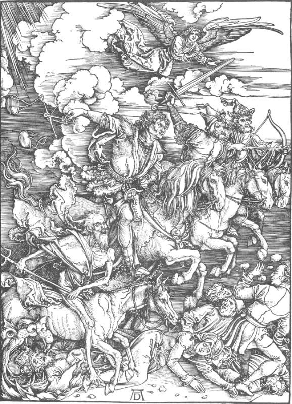

Yıl 1914, mevsimlerden yaz. Avrupa'nın üstüne kara bulutlar çökmüş, fırtına koptu kopacak. İki büyük kampa ayrılmış ülkeler, endüstriyel rekabet, sömürgecilik çıkarları ve tarihsel hınçlardan kaynaklanan hesaplaşmaların peşindeler; o güne değin görülmedik etkinlikte ağır silahlarla donanmışlar, orduları hazır ol durumunda, askerlerinin elleri tetikte, gerginlik içinde bekleşiyorlar. Birçok kez diplomatik girişimlerle önlenmiş bulunan kaçınılmaz savaşın soluğu duyulmada. İnsanlığın gördüğü en büyük çatışmanın başlaması için bir kıvılcım yetecek.
Ve o kıvılcımın parıltısı Saraybosna'dan geliyor: Bir Sırp milliyetçisinin Avusturya-Macaristan İmparatorluğu'nun vârisi Arşidük Ferdinand'ı tabancayla vurarak öldürmesi üzerine kıyamet kopuyor. Karşılıklı iki kamptan Avrupa ülkeleri peş peşe birbirlerine savaş ilan ediyorlar. Gençler sel gibi koşarak gönüllü yazılıyorlar, zamanın fotoğraflarında askerlik şubelerinin önünde gülerek sıraya girdiklerini görüyoruz; hepsi de yurtseverlik duygularıyla coşmuşlar, haklı tarafta olduklarını ve çatışmanın kısa sürede, kendi parlak zaferleriyle sonuçlanacağını düşünüyorlar. Oysa ilk şiddetli çarpışmalardan sonra siper savaşına dönüşecek ve tarihe I. Dünya Savaşı olarak geçecek olan boğazlaşma dört yıl süreyle o güne değin insanlığın gördüğü en geniş çaplı kıyımlara neden olacak, bittiğinde geriye uçsuz bucaksız ölüm tarlaları bırakacak ve o tarlalara yirmi yıl sonraki II. Dünya Savaşı'nın tohumları atılacaktır.
O sıralar Paris'i mesken tutmuş olan ünlü İspanyol gazeteci ve romancısı Vicente Blasco Ibañez tanık olduğu tüm bu olayları, ülkelerin çatışmaya sürüklenişini, savaşın arifesini, patlak verişini, Almanya'nın Belçika'yı istila edişini, Fransa'nın savunmasını örgütleyişini, iki taraflı korkunç kayıplara neden olan o ilk Marne Çarpışması'nı ve orduların siperlere gömülüşünü Mahşerin Dört Atlısı adını verdiği romanında aktarır.
Geçmişi irdeleyen bir tarihsel roman değil, dosdoğru yaşanılan tarihin güncelinden kaynaklanan ve canlılığını yüz yıla yakın süre sonra aynen koruyan bir yapıttır Mahşerin Dört Atlısı. Baştan sona insan kitlelerinin gerçeklerine dayanır, sahici trajik olayların sıcaklığını ve dehşetini yaşatır okura, hatta yer yer savaş röportajı kıvamında gelişir. Ancak, özyaşamöyküsü ağırlıklı olmakla birlikte, olaylar tutku ve aile ilişkileriyle örülmüş sağlam, ustalıklı bir roman kurgusu çerçevesinde anlatılır. Aşkları savaşın ezici gerçeğiyle yüz yüze kalan Julio ile Margarita'nın çevresinde Paris sokaklarından gelip geçen ya da savaş alanlarından kopup gelmiş çok sayıda ikinci derecede kişiyle tanışırız. O özenli tiplemenin kahramanları öylesine canlı, öylesine inandırıcıdırlar ki, giderek sanki hayatımızın bir noktasında karşılaştığımız kişilere dönüşüp, belleğimizden bir daha ayrılmazlar.
Yapıtta hiçbir şey fanteziye ya da rastlantıya bırakılmamıştır, öykünün Paris'in "Kefaret Şapeli"nde başlaması bile: Çünkü Mahşerin Dört Atlısı aslında baştan başa bir kefaret öyküsüdür, iki kuşak Desnoyers'lerle Margarita'nın kefaretinin. Aynı zamanda bireyin yaşamında kovaladığı değerleri sorgulayışının, kendi kendisiyle hesaplaşmasının öyküsü. Ama her şeyden önce ve hepsinden sonra –yazarın Fransız ulusalcılığına coşkulu katılımına karşın– tarihi yorumlayan ve sorgulayan, savaş karşıtı bir yapıttır. Blasco Ibañez, ilk gençliğinden beri tanık olduğu Alman militarizmini çözümler, Kayzer II. Wilhelm'in kitlelerden ve aydınlardan destek bulan savaş heveslisi ideolojisine lanet okurken, yakın tarih meraklısı okura, 1928'de sona eren kendi yaşamına sığmayacak olan Nazizmin gelişmesinin ve II. Dünya Savaşı'nın ipuçlarını da sunmuş olur.
Gerçek yaşamı elden gelen tüm nesnellikle, olduğu gibi yansıtmayı amaçlayan doğalcılık akımını izleyen bir romancı olan Vicente Blasco Ibañez, romantizm çağının anısını da belleğinden silmiş değildir. Kendi karakterinin o çağa yaraşır serüvenciliği bir yana, kesinkes taraftar olduğu, davasını benimsediği, hatta dünyada tanıtımını canıgönülden üstlendiği Fransızların ulusalcı coşkusu karşısında dört dörtlük bir romantizm sergiler: Ama bu bir yazınsal seçim değil, yazar için olayları yaşamanın kaçınılmaz bir biçimidir. Anlatımı geliştirdikçe, savaşın getirdiği kanlı boğazlaşma gerçeğinin, ulusalcılığın romantizmini ezip geçişini ön plana çıkartır. Onca adsız yiğitlikten geriye kalan yalnız "ecel tarlaları" olacaktır. 1916'da, savaş siperlere sinmiş, zaferi kimin kazanacağı belirsizken, şöyle noktalar çözümlemesini:
"Savaş nasıl biterse bitsin, kötü bitmiş olacaktır. Mahşer ejderhası sakatlansa bile, birkaç yıl sonra yeniden canlanacak ve insanlara sonsuza değin eşlik edecektir."
*
Mahşerin Dört Atlısı'nda Vicente Blasco Ibañez (1867-1928) yaşamının iki temel deneyimini anlatır. Kendisi 1914 yılında Paris'te ömrünün bir karar anını yaşamaktadır: Maddi ve manevi gücünü tüketen olağanüstü bir serüvene atıldığı Yeni Dünya'dan dönmüş, doğduğu Avrupa'ya ve her zamanki yazarlık yaşamına yeniden sahip çıkmıştır. Ama o sırada savaş patlak vermiştir. Günü gününe yaşadığı insanlık trajedisini işte yaşantısının o dönemini yansıtarak aktarır.
Gerek romanın Arjantin'de geçen birinci bölümünde, gerekse Paris'te geçen daha sonraki bölümlerinde, anlatısının gerisinde kendisi vardır, ama birinci kişi olarak ortaya çıkmaz, romanının kişilerinde gizlenir: İlkin İspanyol kökenli toprak ağası ve hayvan yetiştiricisi Madariaga kendisidir, daha doğrusu bir süre için olmayı hedeflediği kişidir; sonraki bölümlerde savaş karşısındaki gözlemleyici ve yorumlayıcı tavrını devrimci Rus anarşist Tchernoff canlandırır. Romanın başkişisi Julio Desnoyers ise, savaş ortasında bile egzotik zevklerini elden bırakmayan Paris'te tango modasını yaymakta olan, kendi oğlu Julio'dan esinlenmiştir.
Bu olağandışı özyaşamöyküsünü yeterince izleyebilmek için birkaç yıl geriye gitmek gerekir. Valencialı V. Blasco Ibañez bir İspanyol, bir Akdenizlidir, dolayısıyla bir coşku, tutku, gönül adamıdır.[1] Sözcüklerin ve düşlerin büyüsüne tüm varlığıyla kapılır. Yazarlığının yanı sıra kitleleri peşinden sürükleyen ateşli bir hatip, radikal eğilimli bir politikacı ve bir serüvencidir.
Kırklı yaşlar onun zaten fırtınalı olan siyasal ve özel yaşamını altüst eder. 1907'de Doğu'yu simgeleyen Osmanlı'nın başkenti İstanbul'a yaptığı yolculuk, yaşamındaki kurulu düzene sırt çevirip uzaklaştığı, yepyeni dünyalara açıldığı bir dönemin başlangıcı olur.
Yazar 1909'da Güney Amerika yollarına düşer: Arjantin, Şili ve Paraguay'da konferanslar verecektir; söz sanatının doruğuna ermiş bir ünlü gazeteci ve romancı olarak hepsinde kalabalıkların büyük ilgisiyle karşılanır, yüz kadar ateşli konuşma yapar. Turnesi iki-üç yıl sürecek, İspanyolca konuşulan tüm ülkeleri dolaşacaktır. Ve Blasco Ibañez, Yeni Dünya'nın engin ufkundan fazlasıyla etkilenir; keşfedilmeyi, yaşanmayı bekleyen uçsuz bucaksız ıssız toprakların çağrısını yüreğinde duyar, damarlarında o kıtayı zamanında keşfedip bin bir zahmetli serüvenle yerleşime açmış olan conquistador[2] atalarının ateşini duyumsar, düzenli konferansçı kimliği kendisine dar gelmeye başlar:
"Arjantin'i başka hiçbir konferansçının, hatta hiçbir seyyahın görmediği kadar iyi tanıdım, tropikal bölgelerden, en güneydeki donmuş topraklara değin. Kimi zaman, Buenos Aires'ten yolculuklarımı yönetmekte olan emprezaryo beni bir taşra ilinde falan ya da filan konferans salonunda dinleyicileri coşturuyor sanırken, bir gazete havadisinden yolumu değiştirmiş olduğumu, kuzeyde bir yerli kulübesinde Indio'ların göreneklerini incelemekte bulunduğumu haber alıyordu. Eski çağların conquistador'larının avare ruhu canlanıyordu sanki içimde. İlkel yerlerin çekimini, yabanıl toprakla mücadelenin ateşini duyumsuyor, Batı Hindistan'ı uygarlaştırmaya gelen ilk beyaz adamların girişimlerini hüzünle anımsıyordum. Bazı ünlü Arjantinliler düşüncelerimi sezerek çekici öneriler getirmekte gecikmediler: Neden sanki Arjantin'de kalıp toprağı işleyerek bir servet edinmiyordum? Başlangıçta olmaz dedim, ama giderek kendimi o olanaksız düşe kaptırdım: Bir süre için bile olsa milyoner olmak, bir işçi ordusunu yönetmek, dünyanın bir köşeciğinin görünümünü değiştirerek çölde yaşanabilir yerler yaratmak düşüne."
Blasco Ibañez böylece turnesini yarıda keser, işitilmedik bir serüvene atılır: Arjantin'in tarım görmemiş bakir topraklarında yeni yerleşkeler kuracaktır. O amaçla kendi kenti Valencia'ya giderek gönüllü köylüler toplayıp oralara götürür ve 1910-1913 yılları arasında, biri güneyde, Patagonya'da, Rio Negro kıyısında "Cervantes", diğeri kuzeyde, tropikal bölgede, Uruguay ile Paraguay sınırında "Yeni Valencia" adını verdiği iki yerleşkeyi gerçeğe dönüştürür. İki yerleşke arasında dört gün dört gecelik tren yolculuğu vardır ve serüvenci yazar o yolculuğu sayısız kez yapar.
Çilekeş ve çalışkan Valencia köylüleri kendi ülkelerinde edindikleri tekniklerden yararlanarak oralarda etkin sulama ağları kurar, toprağı özenle verimlileştirirler. O kentli politikacı ve aydın, yabanıl doğayla boğuşan, çoğu uygarlık nedir bilmeyen yerlilerle birlikte ömür süren bir yerleşkeci olup çıkmıştır.
İşte kişiliğiyle, inançları ve değer yargılarıyla Mahşerin Dört Atlısı'nın birinci bölümüne egemen olan Kentauros Madariaga tipi böyle doğar: Yüzyıllar boyunca dünyanın uzak bir köşesinde bin bir zahmetle kendi gereksinim ve anlayışlarına uygun bir yaşamı geliştirmeye varlığını adamış ve o uğurda ölmüş nice İspanyol göçmeninin düşlerine bir saygı göstergesi olarak.
Cervantes ve Yeni Valencia yerleşkeleri gelişir; ne var ki bu girişim yazın adamının başlangıçta düşündüğünden çok daha büyük bir güç ve çaba gerektirmekte, onu tüketmektedir. Dahası Arjantin Cumhuriyeti müzmin ekonomik bunalımlarından birine girer: Birçok kuruluş iflas eder ve bankalar kredilerini dondurduktan başka verdiklerinin de geri ödenmesini isterler. Blasco Ibañez ekonomik bakımdan çaresiz kalmıştır; üstelik o kırsal konumundan sıkılmıştır, yazın yaşamına geri dönmeyi, beş yıldır bir kenarda unuttuğu kalemine yeniden sarılmayı dilemektedir:
"Endüstri ya da tarımla servet yapmak insanın tüm varlığını gerektiren bir şey. Bana düşen rol Amerika'nın tüm milyoner ailelerinin kökeninde bulunan öncülerden biri olmaktı. Onca özveriye değer miydi bu? Nice Güney Amerikalı ailede görüldüğü üzere, bir büyükbabanın biriktirdiği serveti torunlarım Montmartre'da harcasınlar diye niçin kendimi feda etseydim? Ve en önemlisi, kabul edemeyeceğim şey yazından sonsuza değin kopmak, giderek yerleşkecilerin kırsallığına yaklaşmaktı..."
Blasco Ibañez böylece iki yerleşkesini uzun uğraşlar ve maddi kayıplarla elden çıkardı. 1914 yılı başlarında tasfiye işlemlerini tamamlamak üzere uzun süreyle Buenos Aires'e gitmesi gerekti. Sonra yaz başında, Yeni Dünya'yı anlatacağı bir dizi romanı zihninde tasarlamış olarak, gemiyle okyanusu aştı, Paris'teki kiralık evine döndü. Ama tarihin gelişimi onu başka, daha güncel bir yapıta yönlendirecekti: Bu olayların şöyle ya da böyle yansıyacağı Mahşerin Dört Atlısı'na.
*
Yazarın yaşamında tanık olduğu, bir politikacı olarak yakından izlediği ve Avrupa'yı giderek hızlanan bir tempoyla savaşa sürükleyen olaylar dizisinde temel gelişme 1890'da Alman tahtına Kayzer II. Wilhelm'in çıkışı ve Bismarck'ın görevinden alınışı olmuştu. Almanya'nın dış politikası birden rota değiştirmiş, yaşlı şansölyenin ustalıkla oluşturduğu ve yirmi yıl süreyle Avrupa'da barışı sağlamış olan karmaşık siyasal anlaşmalar ağına sırt çevrilerek, dünya egemenliğini amaçlayan tehditkâr bir dış politika benimsenmişti. Almanya ile Fransa arasındaki şiddetli ekonomik ve endüstriyel rekabetin yanı sıra, 1870 Savaşı sonucunda Alsace-Lorraine bölgesinin Almanya tarafından ilhak edilmiş olması esasen iki ülke arasında sürekli bir güvensizlik ve gerginliğe neden olmaktaydı.
II. Wilhelm'in ülkenin egemen sınıflarınca, hatta bazı üniversite öğretim üyeleri, kimi bilim adamları ve aydınlarınca desteklenen yayılmacı emelleri kısa sürede Avrupa'da bir kutuplaşmaya yol açmıştı: Bir yanda Fransa, Büyük Britanya, Rusya'dan oluşan Üçlü İtilâf, karşısında Prusya, Avusturya-Macaristan İmparatorluğu, Sırbistan'dan oluşan Üçlü İttifak.
Savaş ortamı Avrupa'nın başlıca başkentlerinde elle tutulur bir gerginliğe ve tedirginliğe yol açmış, Osmanlı'nın giderek elden bırakmak zorunda kaldığı Balkan toprakları barut fıçısına dönmüştü. Ve o barut birden patladı:
28 Temmuz'da Avusturya-Macaristan İmparatorluğu veliahdının Saraybosna'da öldürülmesi üzerine bu ülke derhal Sırbistan'a savaş açtı.
30 Temmuz'da Rusya genel seferberlik ilan etti.
1 Ağustos'ta Almanya, Rusya'ya savaş ilan etti; Fransa genel seferberlik işlemlerine başladı.
3 Ağustos'ta Almanya Fransa'ya savaş açtı, ertesi gün Belçika'yı işgal etti. Aynı gün Büyük Britanya savaşa katıldığını bildirdi.
Çatışma başlarken genelkurmaylar planlarını düşmanın hızla bozguna uğratılacağı inancına göre yapmışlardı, kimse yıllar yılı uzayacak yıpratıcı, tüm güçleri tüketici bir savaş beklemiyordu. Eldeki yepyeni, görülmedik etkinlikteki silahların yalnızca vurucu gücünü hesaplayanlar kendi ordularının da karşılaşacakları muazzam kıyımları beklemiyorlardı.
İlkin Almanya, Schlieffen Planı uyarınca Fransa'ya saldırdı, Alman birliklerine General Moltke komuta ediyordu. General Joffre'nin komutasındaki Fransız ordusu arkadan sarılmamak için uzun süre geri çekildikten sonra, Paris'e yalnızca 70 km. uzaklıkta, Marne Nehri kıyısındaki kanlı çarpışmalar sonunda Alman saldırısını güçlükle durdurabildi. Çarpışmaya karşılıklı iki buçuk milyonu aşkın asker katıldı ve iki taraftan yarım milyonu aşkın kayıp verildi. Askeri uçaklar kentlerin ve savaş cephelerinin üstünde uçarak o güne değin görülmedik keşif ve propaganda görevleri üstlendiler.
Marne Çarpışması 5-9 Eylül günlerinde gerçekleşti. General Joffre, Paris'te yeni bir ordu topladı. Vali Gallieni kentteki tüm taksileri görevlendirerek muvazzafları savaş alanına sürdü. O sayede Alman saldırısı savuşturuldu, Almanlar bir süre geri çekildiler, sonra bulundukları yerde ayak dirediler, böylece yıllarca sürecek bezdirici siper savaşı başladı.
Mahşerin Dört Atlısı'nda anlatılan savaş olayları bunlar.
Paris'te o gergin, o kaygılı, o cehennemi Ağustos ayında Blasco Ibañez için her şey apaçık ortadaydı. Bir yandan "saygısız Prusya militarizmi", öte yanda "İnsan Hakları'nın ve Victor Hugo'nun ülkesi", bir yanda "gericilik, mağara, kaba kuvvet", öte yanda "özgürlük, uygarlık": Bu denklem karşısında yansız kalması olanaksızdı ve gözlemlediği yerde yalnızca insanlık dışı bir yayılmacılık olayı görüyordu. Bugün baktığımızda bu kökten siyah-beyaz, iyi-kötü ayrımı tarihi basite indirgemek gibi görünüyor, ama unutulmamalı ki yazar "kendisininkiler"in ortasındaydı ve kendisininkiler saldırıya uğramıştı.
Derhal kendi başına, kendi arzusuyla, kafasını ve kalemini Fransa'yla müttefiklerinden yana seferber etti. Savaş üstüne yazdığı yazılar İspanya'da ve Amerika'da yayımlanmaya başladı: Yazar Fransızlara hayranlığını, İtilaf Devletleri'nin zaferine olan inancını belirtiyor, ama aynı zamanda savaşın uzun ve tüketici olacağı kehanetinde bulunuyordu.
Çatışma başladıktan dört ay sonra haftalık bir yayının ilk sayısını ortaya çıkardı: "1914 Avrupa Savaşının Tarihi". İspanya ve Güney Amerika ülkeleri gibi yansız toplumları bilgilendirmeye yönelik bir bülten olmaktan çok öte, her yanı sarmış olan o muazzam ateşin nasıl bir şey olduğunu tüm yanlarıyla ortaya koyuyordu. O girişimiyle yazar İspanya'da benzeri görülmedik bir yayıncılık başarısı elde etti. Bugün bakıldığında tek eksiği soğukkanlı bir nesnellik olarak görülüyor: Kesinlikle Fransa yanlısı bir yayımdı. Öte yandan Blasco Ibañez de bağımsız bir gözlemci olmayı amaçlıyor değildi, tersine, benimsediği davaya tutkuyla hizmet ediyordu.
12 Şubat 1915'te Sorbonne'da düzenlenen Latin Kardeşliği Bayramı'na davet edildi; kuzeyden gelen istilaya karşı savunmaya bir Latin dayanışması anlamı katmaya yönelik bir propaganda etkinliğiydi bu. Yazar konuşmasında özetle şöyle dedi:
"Fransa onurunu ve topraklarını korumak için girdiği savaşta tüm Latin halklarının yaşamı ve onuru uğruna çarpışmaktadır. (...) Fransa ölümsüzdür, çünkü ölüme hükümlü bir beden değildir, bir ruhtur o, şiirle uyumlu olan gerçekten, ilericilikle soylu geleneklerden oluşan Latinliğin ruhudur. (...) Biz tüm Latinler bu yuva-halka kendi geçmişimizden bir şeyler katmışızdır; ve hepimiz eskiden verdiğimiz o sunularımızın yüz katını almışızdır ondan. (...) Şayet Fransa'nın ışığı sönecek olsa, Latin halkları tarihin gök kubbesinde karanlık, soğuk gezegenler gibi boşlukta kalırız. Ama Fransa yaşayacaktır, özgürlük, hukuk ve adalet de ilelebet yaşayacaktır, Orpheus'un barbar hayvanlarını evcilleştiren çalgısının üç altın telidir onlar."
Elbette ki Fransa'da baş tacı ediliyordu yazar, ancak 1916'da kendi ülkesine yaptığı yolculukta soğuk, hatta düşmanca karşılandı; resmen yansızlığını koruyan İspanya, Kayzer'in etkisinde gibiydi sanki. "İspanya'nın silahlı çatışmaya katılmasına şiddetle karşıt, ancak İtilaf Devletleri'ni destekleyen bir yansızlık taraftarı olduğunu" açıkça bildirmek zorunda kaldı. Yine de halka açık toplantılar düzenlemesine ve konuşmalar yapmasına izin verilmedi. Blasco Ibañez düş kırıklığına uğrayarak sessizce Paris'e döndü, ondan sonra ülkesine küstü, sorunlarıyla bir daha ömrünce ilgilenmedi. Bu duyuşuna da romanında zaman zaman değindiği görülür.
Derken yazar, Cumhurbaşkanı Poincaré'in desteğiyle, "savaş cephelerini pek az sivilin tanıdığı bir dönemde" dolaşma olanağını buldu, böylece romanında birinci elden yansıtacağı Marne Çarpışması'nın geçtiği alanları gezebildi ve Reims dolaylarında Beşinci Ordu genel karargâhını ziyaret etti.
Soylu bir davayı üstlendiğine inanmış bir misyon adamı olarak Mahşerin Dört Atlısı'na tüm o deneyim ve gözlemlerini de aktardı. Savaşa odaklı romanda, Arjantin'de oluşmuş, İspanyol-Fransız-Alman, değişik kökenlerden gelen bir ailenin üç kuşak süren öyküsünü anlatır. Çatışmanın arifesinde Avrupa'ya dönüp yerleşme hevesine kapılan aile o kökenlere göre, Paris ile Berlin arasında bölünür ve savaş her bireyi kendi yazgısına yönlendirir.
Roman 1916'da tamamlandığında, vuruşmaya dalmış dünyada anında büyük bir başarı kazanmadı. Ünü ancak çatışma İtilaf Devletleri'nin zaferiyle sona erdikten sonra yayıldı, Fransa'da, İspanya'da, İtalya'da, Hollanda'da "savaş üstüne yazılmış en iyi roman" olarak nitelendi. Ancak asıl baş döndürücü başarıyı ABD'de kazandı, okurlara sunuluşunun ilk ayında otuz bin sattı, art arda yapılan yirmi basımda 200.000 nüshaya ulaştı. Vicente Blasco Ibañez 1919'da ününün doruğundayken Kuzey Amerika'yı ziyaret ettiğinde, Mahşerin Dört Atlısı'nın İncil'den sonra en çok okunan yapıt olduğunu görecekti.
1921'de Rex Ingram yönetiminde beyaz perdeye aktarılan, başrolünü Rodolfo Valentino'nun oynadığı Mahşerin Dört Atlısı sessiz sinemanın klasikleri arasında girerek o ünü pekiştirdi. 1962'de Vicente Minelli tarafından yapıt II. Dünya Savaşı'na uyarlanmış olarak, bir kez daha sinemaya aktarıldı.
Romanın rahatça izlenen, akıcı, sürükleyici biçeminin önemli bir özelliğini de belirtmeden noktalamayalım: Yazar tüm varlığını etkileyen trajik olayları anlatırken, insan karakterine filozofça nükteli yaklaşımını elden bırakmıyor; kişilerinin davranışlarını ince bir alayla betimliyor, bencilliklere, havailiklere, aymazlıklara gülümsüyor. Üstelik o alaylı eleştiriden en büyük payı alan kendi soydaşı Argensola oluyor. Ve çoğu kanlı, dehşet verici türden onca ölümü içeren yapıt, bireylerin çaresiz iğretiliğinin ötesinde, yaşamın coşkun zaferini göz ardı etmiyor.
Neyyire Gül Işık
Madrid, Haziran 2008

Mahşerin Dört Atlısı (1498), Albrecht Dürer.
Okurlarıma
1914 Temmuz'unda yaklaşmakta olan Avrupa savaşının ilk belirtilerini Alman gemisi König Friedrich August ile Buenos Aires'ten Fransa kıyılarına yolculuk yaparken fark ettim.
Bu yapıtın ilk bölümlerinde anlatılan gemi odur. Adını değiştirmeyi ya da çarpıtmayı istemedim. Romanın başında rastlanılan Alman kahramanlar da yine gerçeğin neredeyse aynen kopyasıdır.
Onların coşkuyla "önleyici savaş"tan söz ettiklerini, gün geçtikçe kesinlik kazanan bir olasılığı, yani Almanya'nın özür falan aramaksızın savaş ilan etmesini ellerinde şampanya kadehleriyle kutladıklarını işittim. Ve bunlar okyanusun ortasında, büyük insan topluluklarından uzakta, gemi telsizinin tüm halkların birbirlerine gönderdikleri kaygı dolu iletilerden ancak yakalayabildiği kesintili, karmakarışık havadislerin dışında gezegenin kalan kısmıyla ilişki kopmuşken olup bitiyordu!.. İşte bu yüzden, efendim Almanya savaşı istememişti, Almanlar savaşa bir an önce ulaşmaya can atmıyorlardı dendiğini her duyduğumda küçümseyerek gülümsüyorum ya da sinirleniyorum.
Mahşerin Dört Atlısı'nın ilk bölümü bana Fransa'ya ulaşan son Alman transatlantiğinde rastlantı sonucu yaptığım bir yolculuğun armağanıdır.
Birkaç hafta sonra, 1914 Eylül'ü başlarının ıssızlaşmış Paris'inde yaşıyordum; ilk Marne Çarpışması olup bitmiş, Fransız hükümetini ihtiyat önlemi olarak Bordeaux'ya taşımak gerekmişti. Büyük kentin o olağandışı ortamı bana elinizdeki romanın kalanını esinledi. Arc de Triomphe'a açılan ve o günlerde cansız bir kenti andıran, ölümcül tenhalığı barış zamanlarının görkemi ve zenginliğiyle çelişen bulvarlarda yürürken gözümün önünde tarihin belaları olan "dört atlı" canlandı, yaşamımızın temposunu uzun yıllar boyunca altüst etmeye hazırlanıyorlardı.
Marne'daki kurtarıcı çarpışmanın ardından, hükümet yeniden Paris'e döndüğünde, bir gün sayın Poincaré[3] ile konuştum, kendisi o zamanlar cumhurbaşkanıydı.
Poincaré edebiyatı politikadan daha fazla sever.
— Ben yazarların avukatıyım –der gururla, sanki unvanlarının en değerlisinden söz eder gibi–. Goncourt Akademisi'ni[4] bütün davalarında ben savunmuşumdur.
Cumhurbaşkanı, savaşın ilk ve en çetin anlarında, içimden gelerek yazdığım Fransa lehindeki yazılardan ötürü beni kutladıydı; geleceğin karanlık, belirsiz olduğu zamanlardı, yurtdışında müttefiklere kararlılıkla açık destek verenlerin sayısı bir elin parmaklarını geçmiyordu.
— Sizin cepheye gitmenizi istiyorum –dediydi bana–. Ama gazetelere yazmak için değil. Onu çok kişi yapabilir. Siz romancı olarak gidin. Gözlemleyin, kim bilir belki de yolculuğunuzdan bizim davamıza yarayacak bir kitap doğar.
Cumhurbaşkanı sayesinde, Marne Çarpışması'nın geçtiği bütün uçsuz bucaksız sahneyi o dev çatışmanın izleri henüz tazeyken görebildim. Yine onun tavassutuyla, Reims yakınlarında, Beşinci Ordu Komutanı General Franchet d'Esperey'nin genel karargâhının bulunduğu ufak bir kasabada yaşadım.
Sonraları, savaşın son yılında, Franchet d'Esperey, Doğu ordusunu yollayıp Bulgarları yendi, barış istemeye zorladı, böylece o genel boğazlaşmanın sonunu hızlandırmış oldu. Günümüzde kendisi Fransa Cumhuriyeti'nin mareşalidir.
Bu romanı Paris'te, Almanlar başkentin yirmi-otuz kilometre ötesindeyken kaleme aldım; Opera Meydanı'nda bir otomobil kiraladınız mı bir saate varmadan siperlerinin birkaç metre ötesine varıyordunuz, tüfeklerle makinelilerin takırtısı kesilip de o perişan ölüm tarlalarında yeniden sessizlik egemen olduğunda, toprağa kulak verirseniz düşmanların konuşmalarını işitiyordunuz.
Paris içinde iletişim araçlarının bulunmayışı ve savaşın çoğumuzu parasız bırakması yüzünden, Boulogne Ormanı yakınlarında oturduğum şirin, bahçeli evden çıkmak zorunda kaldım, kent merkezinde pek avam bir mahallede, birçok komşunun bir arada oturduğu, duvarları sanki mukavvadan yapılmışçasına ses geçiren bir apartmana taşındım.
Savaş bizi çekiyor, kent halkıyla hallihamur ediyor gibiydi. Hayatımız kamp yaşantısına benziyordu. Çocuklar ufacık bir köydeymiş gibi sokakta oynuyorlardı; her türlü gürültü patırtıya, rahatsızlığa hoşgörüyle katlanıyorduk. Kim şikâyet etsindi, normal zamanlarda değildik ki, tek kaygımız düşmanın ilerlemesi ya da geri çekilmesiydi; gece bastırdığında hepimiz ışıldakların parlak ışınlarının dilimlediği gökyüzünün karanlığını tedirgin seyrediyorduk, acaba sakin sakin uyuyabilecek miyiz, yoksa uçak filolarının mermileri gelip uykumuzu dağıtacak mı diye kendi kendimize soruyorduk.
Oturduğum apartmanın değişik katlarında dört tane piyano bulunuyordu, hepsi de sabahın ilk saatlerinden başlayıp ta gece yarısından sonraya kadar çalınıyordu. Komşu kadınlar, akılları cephedeki kocalarında, babalarında ya da sevgililerinde, sıkıntılarını ya da tedirginliklerini piyanolarını beceriksizce, tekdüze tıngırdatarak avutuyorlardı. Üstelik safi çamur topağı olup ısıtmayan kömür yüzünden, mideye zarar savaş ekmeğinden, yiyeceklerin kalitesinin berbatlığından, savaşan bir ordunun gerisinde, hüzünlü, biçare, zaferden uzak bir yaşantının tüm azabından ötürü kaygılanmak durumundaydık.
Ömrümde hiç daha beter koşullar altında çalıştığım olmamıştı. Ayazdan ellerim ve yüzüm kırış kırış olduydu; kış soğuğuna dayanabilmek için asker postalları ve çorapları giyiyordum.
Mahşerin Dört Atlısı'nı işte o koşullarda yazdım.
O yoksul odada, tepemde üç, ayaklarımın altında bir piyano, belediye temizlik yapmadığından pis kokular saçan bir sokağa açılan bir pencerenin yanındaydım, düzinelerle çocuk çığlık çığlığa bağrışarak oynuyorlardı, babaları başlarında değildi, çünkü ancak kırk yılda bir izin alıp cepheden dönebiliyorlardı. Üstelik sokaktan durup dinlenmeksizin türkücüler geçiyor, her çeşit şamata o olağanüstü bağlamda hoş karşılanıyordu.
Ama savaşın kahramanlık ortamının etkisindeydik, dört yıl süreyle Paris'te hepimiz öyle bir yaşantı sürdük ki şimdi hatırladıkça şaşırıyoruz.
Rennequin Sokağı'nda bir ufacık apartman dairesinde tasarlanıp kaleme alınan roman daha sonra dünyayı dolaştı, tüm uygar ülkelerin dillerine çevrildi ve o ülkelerden bazılarında –en önemli ve güçlülerinde– asla aklımdan geçmemiş olan bir başarı kazandı.
V.B.I., 1923